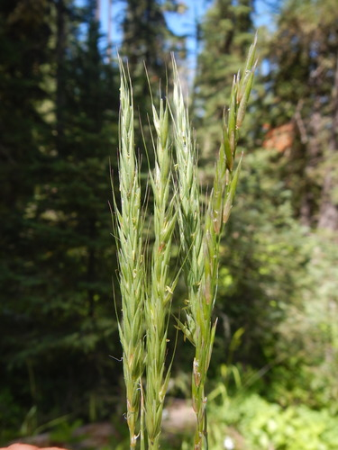
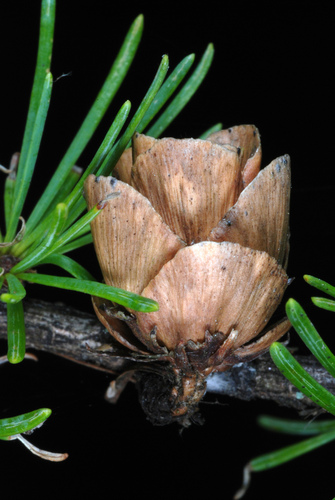

Pioneer
What the plant does, from the tags the catalogue records against it.
58 plants
 Ascending MilkvetchAstragalus laxmanniiBalsam PoplarPopulus balsamiferaBebb's WillowSalix bebbiana
Ascending MilkvetchAstragalus laxmanniiBalsam PoplarPopulus balsamiferaBebb's WillowSalix bebbiana Boreale OxytropisOxytropis borealis
Boreale OxytropisOxytropis borealis W. Terry Hunefeld, some rights reserved (CC BY), uploaded by W. Terry Hunefeld") BroomweedGutierrezia sarothrae
BroomweedGutierrezia sarothrae Douglas Goldman, some rights reserved (CC BY-SA), uploaded by Douglas Goldman") Canada GoldenrodSolidago canadensis
Canada GoldenrodSolidago canadensis Dominic Gentilcore, some rights reserved (CC BY), uploaded by Dominic Gentilcore") Cut-leaved NightshadeSolanum triflorum
Cut-leaved NightshadeSolanum triflorum Matt Lavin, some rights reserved (CC BY-SA)") Drummond's MilkvetchAstragalus drummondiiEarly Yellow OxytropisOxytropis sericea
Drummond's MilkvetchAstragalus drummondiiEarly Yellow OxytropisOxytropis sericea Tom Pollard, some rights reserved (CC BY), uploaded by Tom Pollard") Evening PrimroseOenothera biennis
Evening PrimroseOenothera biennis Douglas Goldman, some rights reserved (CC BY-SA), uploaded by Douglas Goldman") FireweedChamaenerion angustifolium
FireweedChamaenerion angustifolium Matt Lavin, some rights reserved (CC BY)") Giant Wild RyeLeymus cinereus
Giant Wild RyeLeymus cinereus Matt Lavin, some rights reserved (CC BY-SA)") Golden BeanThermopsis rhombifolia
Golden BeanThermopsis rhombifolia crothfels, some rights reserved (CC BY)") Golden DrabaDraba aurea
Golden DrabaDraba aurea Thayne Tuason, some rights reserved (CC BY-SA)") Golden TickseedCoreopsis tinctoriaGreen AlderAlnus alnobetulaGumweedGrindelia squarrosa
Golden TickseedCoreopsis tinctoriaGreen AlderAlnus alnobetulaGumweedGrindelia squarrosa Hairy Wild RyeLeymus innovatus
Hairy Wild RyeLeymus innovatus Matt Lavin, some rights reserved (CC BY)") Hoary AsterDieteria canescens
Hoary AsterDieteria canescens Douglas Goldman, some rights reserved (CC BY-SA), uploaded by Douglas Goldman") Jack PinePinus banksiana
Jack PinePinus banksiana Alison Northup, some rights reserved (CC BY), uploaded by Alison Northup") Lodgepole PinePinus contortaMacKenzie's HedysarumHedysarum mackenziei
Lodgepole PinePinus contortaMacKenzie's HedysarumHedysarum mackenziei Bob Miller, some rights reserved (CC BY), uploaded by Bob Miller") Northern Wheat GrassElymus lanceolatus
Northern Wheat GrassElymus lanceolatus Paper BirchBetula papyrifera
Paper BirchBetula papyrifera Tom Norton, some rights reserved (CC BY), uploaded by Tom Norton") Pearly EverlastingAnaphalis margaritacea
Pearly EverlastingAnaphalis margaritacea Philadelphia FleabaneErigeron philadelphicus
Philadelphia FleabaneErigeron philadelphicus Tom Norton, some rights reserved (CC BY), uploaded by Tom Norton") Pin CherryPrunus pensylvanicaPink CorydalisCapnoides sempervirens
Pin CherryPrunus pensylvanicaPink CorydalisCapnoides sempervirens Matt Lavin, some rights reserved (CC BY-SA)") Plains WormwoodArtemisia campestris
Plains WormwoodArtemisia campestris bobkennedy, some rights reserved (CC BY-SA), uploaded by bobkennedy") Pussy WillowSalix discolor
Pussy WillowSalix discolor Matt Lavin, some rights reserved (CC BY-SA)") RabbitbrushEricameria nauseosa
RabbitbrushEricameria nauseosa Benoit NABHOLZ, some rights reserved (CC BY-SA), uploaded by Benoit NABHOLZ") River BeautyChamaenerion latifoliumRocky Mountain BeeplantPeritoma serrulata
River BeautyChamaenerion latifoliumRocky Mountain BeeplantPeritoma serrulata Roberto Daniel Avila, some rights reserved (CC BY), uploaded by Roberto Daniel Avila") SaltgrassDistichlis spicataSand GrassCalamovilfa longifolia
SaltgrassDistichlis spicataSand GrassCalamovilfa longifolia Harvey Barrison, some rights reserved (CC BY-SA)") Sandbar WillowSalix interior
Sandbar WillowSalix interior Sandberg BluegrassPoa secundaScorpion WeedPhacelia sericeaShort-capsuled WillowSalix brachycarpa
Sandberg BluegrassPoa secundaScorpion WeedPhacelia sericeaShort-capsuled WillowSalix brachycarpa David Anderson, some rights reserved (CC BY), uploaded by David Anderson") Silky LupineLupinus sericeus
Silky LupineLupinus sericeus Ryan Hodnett, some rights reserved (CC BY-SA)") SilverberryElaeagnus commutata
SilverberryElaeagnus commutata Tim Messick, some rights reserved (CC BY), uploaded by Tim Messick") Silvery LupineLupinus argenteus
Silvery LupineLupinus argenteus Nolan Exe, some rights reserved (CC BY), uploaded by Nolan Exe") Slough GrassBeckmannia syzigachne
Slough GrassBeckmannia syzigachne
Smooth Wild RyeElymus glaucus Douglas Goldman, some rights reserved (CC BY-SA), uploaded by Douglas Goldman") Strawberry SpinachBlitum capitatum
Strawberry SpinachBlitum capitatum Kate, some rights reserved (CC BY), uploaded by Kate") Sulphur HedysarumHedysarum sulphurescens
Sulphur HedysarumHedysarum sulphurescens Sandy Wolkenberg, some rights reserved (CC BY), uploaded by Sandy Wolkenberg") Tall GoldenrodSolidago altissima
Tall GoldenrodSolidago altissima
TamarackLarix laricina Hladac, some rights reserved (CC BY-SA)") Thinleaf AlderAlnus incana
Thinleaf AlderAlnus incana Michael J. Papay, some rights reserved (CC BY), uploaded by Michael J. Papay") TicklegrassAgrostis scabra
TicklegrassAgrostis scabra Douglas Goldman, some rights reserved (CC BY-SA), uploaded by Douglas Goldman") Trembling AspenPopulus tremuloides
Trembling AspenPopulus tremuloides Jim Morefield, some rights reserved (CC BY)") Water BirchBetula occidentalis
Water BirchBetula occidentalis Kevin Krebs, some rights reserved (CC BY), uploaded by Kevin Krebs") Water SmartweedPersicaria amphibiaWestern WheatgrassPascopyrum smithii
Water SmartweedPersicaria amphibiaWestern WheatgrassPascopyrum smithii Laura Clark, some rights reserved (CC BY), uploaded by Laura Clark") Yellow FlaxLinum rigidum
Yellow FlaxLinum rigidum Jason Hollinger, some rights reserved (CC BY-SA)") Yellow Mountain AvensDryas drummondii
Yellow Mountain AvensDryas drummondii Caleb Catto, some rights reserved (CC BY), uploaded by Caleb Catto") Yellow RattleRhinanthus minorYellowstone DrabaDraba incerta
Yellow RattleRhinanthus minorYellowstone DrabaDraba incerta